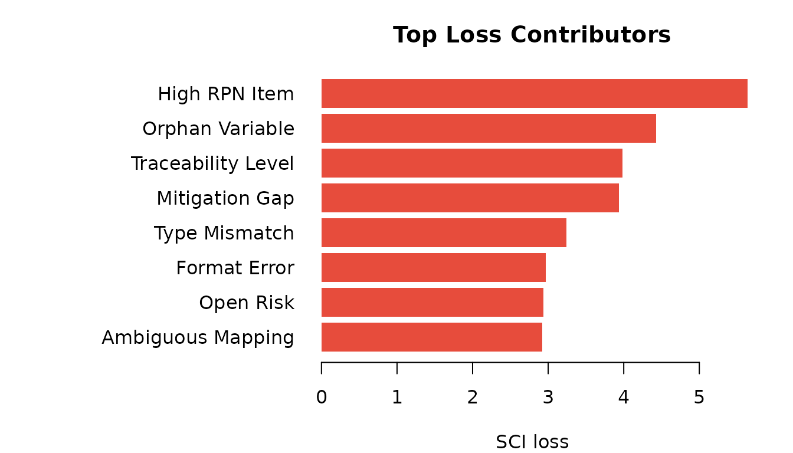
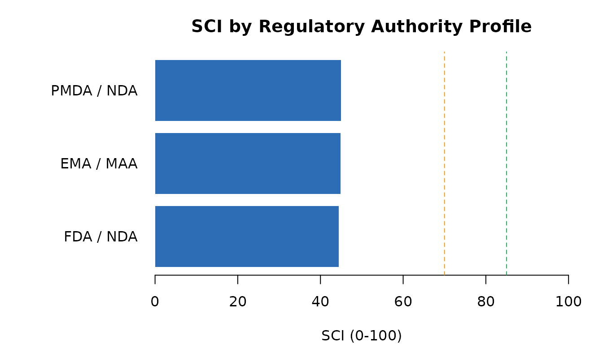
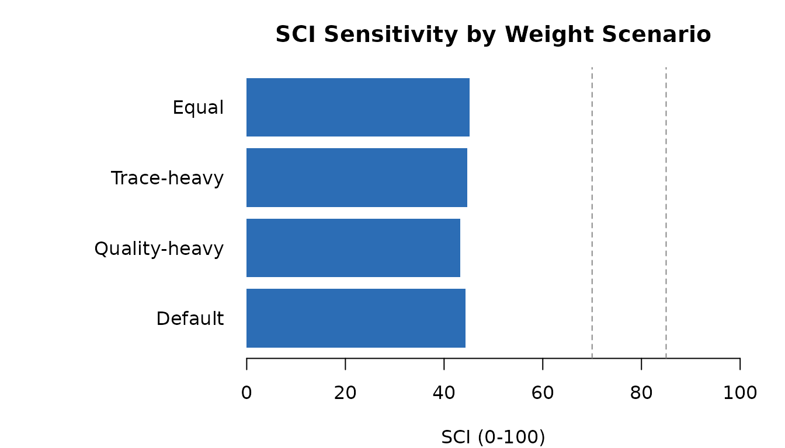

This vignette walks through the complete R4SUB workflow — from loading evidence to a regulatory-calibrated Submission Confidence Index (SCI) and decision band.
2. Load evidence
evidence_pharma contains 250 evidence rows for study
CDISCPILOT01 across all four readiness pillars.
data(evidence_pharma)
# Pass / warn / fail by pillar
evidence_summary(evidence_pharma)
#> indicator_domain severity result source_name n
#> 1 quality high fail define_checker 1
#> 2 trace high fail define_checker 2
#> 3 quality info fail define_checker 2
#> 4 usability info fail define_checker 1
#> 5 quality low fail define_checker 2
#> 6 quality medium fail define_checker 2
#> 7 risk medium fail define_checker 1
#> 8 trace medium fail define_checker 1
#> 9 quality critical na define_checker 1
#> 10 quality info na define_checker 2
#> 11 quality low na define_checker 1
#> 12 quality medium na define_checker 1
#> 13 trace critical pass define_checker 1
#> 14 quality high pass define_checker 3
#> 15 usability high pass define_checker 2
#> 16 quality info pass define_checker 3
#> 17 risk info pass define_checker 1
#> 18 usability info pass define_checker 2
#> 19 quality low pass define_checker 3
#> 20 trace low pass define_checker 2
#> 21 usability low pass define_checker 2
#> 22 quality medium pass define_checker 5
#> 23 risk medium pass define_checker 4
#> 24 trace medium pass define_checker 2
#> 25 usability medium pass define_checker 2
#> 26 quality critical warn define_checker 1
#> 27 trace critical warn define_checker 1
#> 28 quality high warn define_checker 2
#> 29 trace info warn define_checker 1
#> 30 usability info warn define_checker 1
#> 31 quality medium warn define_checker 1
#> 32 trace medium warn define_checker 1
#> 33 trace high fail manual_review 1
#> 34 quality info fail manual_review 2
#> 35 quality low fail manual_review 2
#> 36 risk low fail manual_review 1
#> 37 usability low fail manual_review 1
#> 38 quality medium fail manual_review 3
#> 39 quality info na manual_review 1
#> 40 quality low na manual_review 1
#> 41 usability low na manual_review 1
#> 42 quality critical pass manual_review 1
#> 43 usability critical pass manual_review 1
#> 44 quality high pass manual_review 2
#> 45 risk high pass manual_review 1
#> 46 trace high pass manual_review 1
#> 47 quality info pass manual_review 2
#> 48 risk info pass manual_review 2
#> 49 quality low pass manual_review 2
#> 50 risk low pass manual_review 2
#> 51 trace low pass manual_review 3
#> 52 quality medium pass manual_review 2
#> 53 risk medium pass manual_review 1
#> 54 trace medium pass manual_review 1
#> 55 usability medium pass manual_review 1
#> 56 usability critical warn manual_review 1
#> 57 quality high warn manual_review 1
#> 58 risk high warn manual_review 1
#> 59 usability high warn manual_review 1
#> 60 quality info warn manual_review 3
#> 61 risk info warn manual_review 1
#> 62 trace info warn manual_review 1
#> 63 quality low warn manual_review 2
#> 64 trace low warn manual_review 1
#> 65 usability low warn manual_review 1
#> 66 quality medium warn manual_review 1
#> 67 risk medium warn manual_review 1
#> 68 trace critical fail pinnacle21 1
#> 69 quality info fail pinnacle21 2
#> 70 risk info fail pinnacle21 2
#> 71 trace info fail pinnacle21 1
#> 72 risk low fail pinnacle21 1
#> 73 quality medium fail pinnacle21 2
#> 74 trace medium fail pinnacle21 1
#> 75 usability medium fail pinnacle21 1
#> 76 usability critical na pinnacle21 1
#> 77 usability high na pinnacle21 1
#> 78 quality info na pinnacle21 2
#> 79 quality medium na pinnacle21 1
#> 80 quality critical pass pinnacle21 2
#> 81 quality high pass pinnacle21 1
#> 82 quality info pass pinnacle21 4
#> 83 risk info pass pinnacle21 1
#> 84 trace info pass pinnacle21 2
#> 85 usability info pass pinnacle21 2
#> 86 quality low pass pinnacle21 4
#> 87 risk low pass pinnacle21 1
#> 88 trace low pass pinnacle21 2
#> 89 usability low pass pinnacle21 2
#> 90 risk medium pass pinnacle21 1
#> 91 usability medium pass pinnacle21 3
#> 92 quality high warn pinnacle21 1
#> 93 quality info warn pinnacle21 1
#> 94 risk info warn pinnacle21 1
#> 95 quality low warn pinnacle21 3
#> 96 quality medium warn pinnacle21 1
#> 97 quality info fail r4subrisk 1
#> 98 usability info fail r4subrisk 2
#> 99 quality low fail r4subrisk 4
#> 100 usability low fail r4subrisk 1
#> 101 quality medium fail r4subrisk 1
#> 102 quality critical na r4subrisk 1
#> 103 quality high na r4subrisk 2
#> 104 risk low na r4subrisk 1
#> 105 risk critical pass r4subrisk 1
#> 106 trace critical pass r4subrisk 1
#> 107 quality high pass r4subrisk 2
#> 108 risk high pass r4subrisk 1
#> 109 quality info pass r4subrisk 5
#> 110 risk info pass r4subrisk 1
#> 111 trace info pass r4subrisk 2
#> 112 usability info pass r4subrisk 1
#> 113 quality low pass r4subrisk 1
#> 114 trace low pass r4subrisk 3
#> 115 usability low pass r4subrisk 1
#> 116 quality medium pass r4subrisk 1
#> 117 trace medium pass r4subrisk 2
#> 118 quality critical warn r4subrisk 1
#> 119 risk high warn r4subrisk 1
#> 120 usability high warn r4subrisk 1
#> 121 trace info warn r4subrisk 1
#> 122 quality low warn r4subrisk 1
#> 123 risk low warn r4subrisk 1
#> 124 quality medium warn r4subrisk 1
#> 125 quality critical fail r4subtrace 1
#> 126 trace critical fail r4subtrace 1
#> 127 quality high fail r4subtrace 1
#> 128 risk info fail r4subtrace 1
#> 129 trace info fail r4subtrace 1
#> 130 usability low fail r4subtrace 2
#> 131 quality low na r4subtrace 1
#> 132 risk medium na r4subtrace 1
#> 133 trace medium na r4subtrace 1
#> 134 quality critical pass r4subtrace 1
#> 135 risk critical pass r4subtrace 1
#> 136 trace critical pass r4subtrace 2
#> 137 quality high pass r4subtrace 1
#> 138 usability high pass r4subtrace 1
#> 139 quality info pass r4subtrace 2
#> 140 risk info pass r4subtrace 3
#> 141 trace info pass r4subtrace 1
#> 142 usability info pass r4subtrace 2
#> 143 quality low pass r4subtrace 2
#> 144 risk low pass r4subtrace 3
#> 145 trace low pass r4subtrace 1
#> 146 usability low pass r4subtrace 3
#> 147 quality medium pass r4subtrace 6
#> 148 trace medium pass r4subtrace 3
#> 149 usability medium pass r4subtrace 1
#> 150 quality high warn r4subtrace 2
#> 151 trace high warn r4subtrace 1
#> 152 quality info warn r4subtrace 1
#> 153 risk info warn r4subtrace 1
#> 154 trace info warn r4subtrace 1
#> 155 usability info warn r4subtrace 1
#> 156 quality low warn r4subtrace 1
#> 157 usability low warn r4subtrace 1
#> 158 quality medium warn r4subtrace 13. Compute the Submission Confidence Index
pillar_scores <- compute_pillar_scores(evidence_pharma)
pillar_scores[, c("pillar", "pillar_score", "n_indicators", "weight")]
#> # A tibble: 4 × 4
#> pillar pillar_score n_indicators weight
#> <chr> <dbl> <int> <dbl>
#> 1 quality 0.396 8 0.35
#> 2 trace 0.439 4 0.25
#> 3 risk 0.499 3 0.25
#> 4 usability 0.472 3 0.15
sci <- compute_sci(pillar_scores)
cat("SCI:", sci$SCI, "\n")
#> SCI: 44.4
cat("Band:", sci$band, "\n")
#> Band: high_risk
scores_vec <- setNames(pillar_scores$pillar_score, pillar_scores$pillar)
cols <- c(quality = "#2C6DB5", trace = "#27AE60",
risk = "#E74C3C", usability = "#F39C12")
par(mar = c(4, 6, 3, 2))
barplot(
scores_vec[names(cols)],
horiz = TRUE,
las = 1,
col = cols[names(scores_vec)],
border = NA,
xlim = c(0, 1),
xlab = "Score (0-1)",
main = paste0("Pillar Scores | SCI = ", round(sci$SCI, 1),
" [", sci$band, "]")
)
abline(v = 0.85, lty = 2, col = "#555555")Pillar scores contributing to the SCI
4. Understand what is driving the score
expl <- sci_explain(evidence_pharma)
top_loss <- head(expl$indicator_contributions, 8)
top_loss[, c("indicator_id", "indicator_name", "indicator_score", "loss")]
#> # A tibble: 8 × 4
#> indicator_id indicator_name indicator_score loss
#> <chr> <chr> <dbl> <dbl>
#> 1 R-HIGH-RPN High RPN Item 0.323 5.64
#> 2 T-ORPHAN-VAR Orphan Variable 0.292 4.43
#> 3 T-TRACE-LEVEL Traceability Level 0.362 3.98
#> 4 R-MITIGATION-GAP Mitigation Gap 0.527 3.94
#> 5 Q-TYPE-MISMATCH Type Mismatch 0.259 3.24
#> 6 Q-FORMAT-ERR Format Error 0.321 2.97
#> 7 R-OPEN-RISK Open Risk 0.648 2.94
#> 8 T-AMBIGUOUS-MAP Ambiguous Mapping 0.533 2.92
par(mar = c(4, 14, 3, 2))
barplot(
rev(top_loss$loss),
names.arg = rev(top_loss$indicator_name),
horiz = TRUE,
las = 1,
col = "#E74C3C",
border = NA,
xlab = "SCI loss",
main = "Top Loss Contributors"
)
Top 8 indicators by SCI loss contribution
5. Apply a regulatory authority profile
prof <- submission_profile("FDA", "NDA")
prof$pillar_weights
#> quality trace risk usability
#> 0.35 0.25 0.25 0.15
val <- validate_against_profile(evidence_pharma, prof)
cat("Compliant:", val$is_compliant, "\n")
#> Compliant: FALSE
cat("Coverage: ", round(val$coverage * 100, 1), "%\n", sep = "")
#> Coverage: 100%
cfg_fda <- profile_sci_config(prof)
ps_fda <- compute_pillar_scores(evidence_pharma, config = cfg_fda)
sci_fda <- compute_sci(ps_fda, config = cfg_fda)
cat("FDA-calibrated SCI:", sci_fda$SCI, "[", sci_fda$band, "]\n")
#> FDA-calibrated SCI: 44.4 [ high_risk ]6. Compare regulatory authority profiles
profiles <- list(
"FDA / NDA" = submission_profile("FDA", "NDA"),
"EMA / MAA" = submission_profile("EMA", "MAA"),
"PMDA / NDA" = submission_profile("PMDA", "NDA_JP")
)
sci_vals <- vapply(profiles, function(p) {
cfg <- profile_sci_config(p)
compute_sci(compute_pillar_scores(evidence_pharma, config = cfg),
config = cfg)$SCI
}, numeric(1))
par(mar = c(4, 9, 3, 2))
barplot(
sci_vals,
horiz = TRUE,
las = 1,
col = "#2C6DB5",
border = NA,
xlim = c(0, 100),
xlab = "SCI (0-100)",
main = "SCI by Regulatory Authority Profile"
)
abline(v = 85, lty = 2, col = "#27AE60")
abline(v = 70, lty = 2, col = "#F39C12")
SCI under different regulatory authority profiles
7. Risk assessment
data(risk_register_pharma)
rr <- create_risk_register(risk_register_pharma)
risk_scores <- compute_risk_scores(rr)
cat("Mean RPN: ", risk_scores$mean_rpn, "\n")
#> Mean RPN: 24.8
cat("Max RPN: ", risk_scores$max_rpn, "\n")
#> Max RPN: 48
cat("Total risks: ", risk_scores$n_risks, "\n")
#> Total risks: 18
print(risk_scores$risk_distribution)
#> # A tibble: 3 × 2
#> risk_level n
#> <chr> <int>
#> 1 high 3
#> 2 low 4
#> 3 medium 11
rd <- risk_scores$risk_distribution
risk_cols <- c(low = "#27AE60", medium = "#F39C12",
high = "#E67E22", critical = "#E74C3C")
rd_named <- setNames(rd$n, rd$risk_level)
rd_plot <- rd_named[intersect(names(risk_cols), names(rd_named))]
par(mar = c(4, 5, 3, 2))
barplot(
rd_plot,
col = risk_cols[names(rd_plot)],
border = NA,
ylab = "Count",
main = paste0("Risk Distribution | Mean RPN = ", risk_scores$mean_rpn),
las = 1
)Risk distribution by severity level
8. Traceability coverage
data(adam_metadata)
data(sdtm_metadata)
data(trace_mapping)
ctx <- r4sub_run_context(study_id = "CDISCPILOT01", environment = "DEV")
#> ℹ Run context created: "R4S-20260317060916-wl4dieex"
tm <- build_trace_model(adam_metadata, sdtm_metadata, trace_mapping)
ev_trace <- trace_model_to_evidence(tm, ctx = ctx)
#> ✔ Evidence table created: 47 rows
ind_trace <- trace_indicator_scores(ev_trace)
ind_trace
#> # A tibble: 5 × 3
#> indicator value description
#> <chr> <dbl> <chr>
#> 1 TRACE_VAR_COVERAGE_L2PLUS 0.694 Proportion of ADaM variables with trace …
#> 2 TRACE_VAR_COVERAGE_L3PLUS 0.694 Proportion of ADaM variables with trace …
#> 3 TRACE_ORPHAN_VAR_COUNT 11 Number of orphan ADaM variables with no …
#> 4 TRACE_AMBIGUOUS_MAPPING_COUNT 0 Number of ADaM variables mapped to multi…
#> 5 TRACE_MEAN_TRACE_LEVEL 2.39 Mean trace level across all ADaM variabl…9. Sensitivity analysis
weight_grid <- data.frame(
quality = c(0.35, 0.50, 0.25, 0.25),
trace = c(0.25, 0.20, 0.40, 0.25),
risk = c(0.25, 0.20, 0.25, 0.25),
usability = c(0.15, 0.10, 0.10, 0.25)
)
scenario_labels <- c("Default", "Quality-heavy", "Trace-heavy", "Equal")
sens <- sci_sensitivity_analysis(evidence_pharma, weight_grid)
par(mar = c(4, 11, 3, 2))
barplot(
setNames(sens$SCI, scenario_labels),
horiz = TRUE,
las = 1,
col = "#2C6DB5",
border = NA,
xlim = c(0, 100),
xlab = "SCI (0-100)",
main = "SCI Sensitivity by Weight Scenario"
)
abline(v = c(70, 85), lty = 2, col = "#888888")
SCI sensitivity to pillar weight variations
10. Ingesting real submission artifacts
The steps above used packaged demo data. In practice you point r4subcore parsers directly at the files on disk — no manual preparation needed.
Define-XML
define_xml_to_evidence() reads a Define-XML 2.0/2.1 file
and scores dataset labels, variable documentation, and derivation
completeness (indicators Q-DEFINE-001 through Q-DEFINE-003).
library(r4subcore)
ctx <- r4sub_run_context("CDISCPILOT01", "DEV")
ev_def <- define_xml_to_evidence("path/to/define.xml", ctx)
# Drop into the standard scoring pipeline
pillar_scores_def <- compute_pillar_scores(ev_def)
compute_sci(pillar_scores_def)Pinnacle 21 validation output
Export the issues list from Pinnacle 21 Enterprise as CSV, then pass
the data frame to p21_to_evidence(). Column names are
detected case-insensitively (Rule / Rule ID, Severity, Dataset,
Variable, Status / Result).
p21_raw <- read.csv("path/to/p21_issues.csv")
ev_p21 <- p21_to_evidence(p21_raw, ctx)Combining sources
Evidence from multiple parsers is merged with
bind_evidence() before scoring:
ev_combined <- bind_evidence(ev_def, ev_p21)
sci_combined <- compute_sci(compute_pillar_scores(ev_combined))All evidence rows carry the same run_id from the shared
context, so every score is fully traceable back to the source files and
the run that produced it.
11. Launch the dashboard
The dashboard opens in your browser with eight tabs: Overview · Evidence · Indicators · Pillars · Sensitivity · Risk · Traceability · Authority
Summary — demo data workflow
| Step | Package | Output |
|---|---|---|
| Load data | r4subdata | evidence_pharma: 250 rows, 4 pillars |
| Score | r4subscore | SCI = 44.4 [high_risk] |
| Profile | r4subprofile | FDA NDA: 44.4 | Compliant: FALSE |
| Risk | r4subrisk | Mean RPN = 24.8, Critical = 0 |
| Trace | r4subtrace | 47 trace evidence rows |
| Dashboard | r4subui | Interactive browser dashboard |